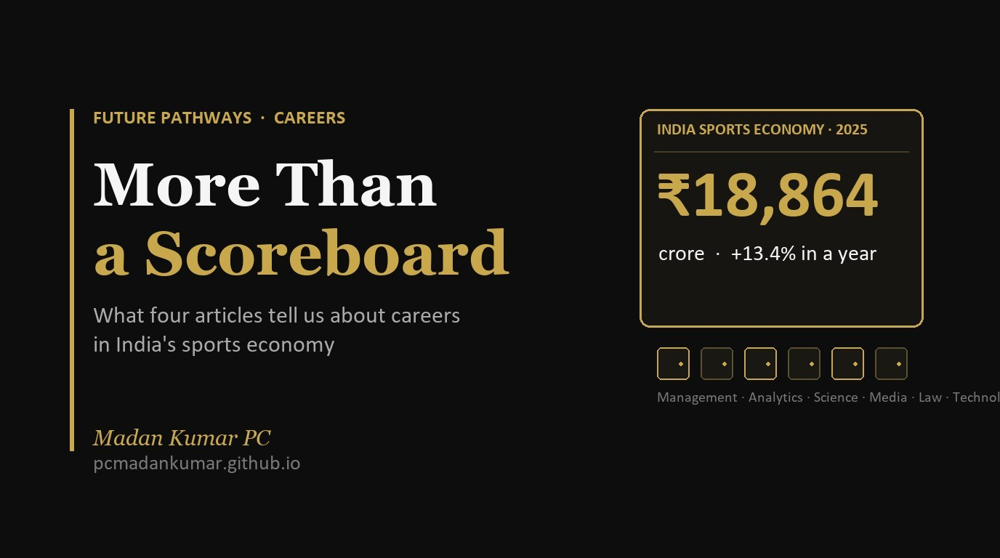

More Than a Scoreboard

What four articles tell us about careers in India's sports economy
Ask a child who loves sport what they want to be. Most will say a player. Ask a parent, and many will say, “Sport is fine as a hobby. Now focus on studies.”
Both answers miss something big. Sport in India is no longer just a game. It is an industry. And most of its jobs are not on the field.
This week I came across four articles on India’s sports economy. One is a career blog. One is an industry report. One is an analysis by a global consulting firm. One is a news story on the Union Budget. Read together, they tell a clear story. Here is what I took away.
The numbers have grown up
India’s sports economy reached ₹18,864 crore in 2025. That is the first time it crossed 2 billion US dollars. It grew 13.4% in a single year. In 2021 it was ₹9,530 crore. So it has almost doubled in four years. [1, 2]
Where does the money come from? Media spending is the biggest part, at ₹9,571 crore. Digital alone grew 24% to ₹4,449 crore. Sponsorships added ₹7,943 crore. Athlete endorsements added ₹1,350 crore. [2]
The IPL drives much of this. In July 2026, one investment bank valued the league at 20.6 billion US dollars. [1]
Money follows performance too. India finished fourth at this year’s Asian Games with 85 medals. It was the country’s second best haul ever. [1, 5]
The government is betting on it
The Union Budget 2026–27 gave the sports ministry ₹4,479.88 crore. That is its highest allocation yet. Khelo India got ₹924.35 crore. And for the first time, ₹500 crore was set aside for making sports goods in India. [3, 4]
The bigger change is the new Khelo India Mission. KPMG describes it as a ten year plan, not a one time scheme. It aims to build a full pathway from school level to elite training centres. [3]
Here is the part every parent should notice. The Mission plans structured training and career pathways for coaches, sports scientists, physiotherapists and support staff. It wants biomechanics, physiology, analytics and injury management built into athlete training. Each of those is a job. [3]
Then there are the big events. Ahmedabad will host the 2030 Commonwealth Games. India has also bid for the 2036 Olympics. Events like these need planners, engineers, marketers, medical teams and media crews for years before the first whistle. [1, 4]
Six doors that are not the field
The Futurowise article lists six career areas. I find this list useful for any family conversation. [1]
- Sports management. Running teams, leagues, federations and events. [1]
- Sports analytics. Using ball by ball and player tracking data to guide selection and strategy. [1]
- Sports science and medicine. Physiotherapy, strength and conditioning, nutrition and sports psychology. [1, 3]
- Sports media and marketing. Broadcasting, content and sponsorship deals. Remember, media is over half of the sports economy. [1, 2]
- Sports law. Player contracts, broadcast rights, governance and anti-doping. [1]
- Sports goods and technology. Equipment, wearables and fan apps. The new ₹500 crore push for local manufacturing points here. [1, 3, 4]
Notice something? Every one of these roles needs a school subject. Statistics. Biology. Commerce. English. Law. The child who loves cricket and maths has a real path. So does the one who loves football and writing.
A reality check
I want to be honest here. This is a growing field, but it is not a magic one.
Cricket takes 89% of the sports economy. Sponsorship for other sports actually fell 12.2% in 2025. So the money is still narrow. [1, 2]
WPP Media’s own leaders have called for stronger grassroots participation and more sports beyond cricket. KPMG also warns that past sports funds were not fully used, and that the Mission depends on good coordination between states, not just money. [2, 3]
My reading? The gap is the opportunity. As kabaddi, football, hockey and athletics grow, they will need trained people. But students should go in with open eyes and a strong base in a core subject.
Five things families can do now
- Change the question. Don’t ask “Player or not?” Ask “Which part of sport excites you? The game, the data, the body, the story or the business?”
- Pair sport with a subject. Maths leads to analytics. Biology leads to physiotherapy and sports science. Commerce leads to management. English leads to media. Choose subjects with that link in mind.
- Test it small. Keep stats for the school team. Write match reports. Volunteer at a district meet. Small projects show real interest.
- Look beyond cricket. Follow other leagues and federations. That is where the next wave of roles will open.
- Keep a strong base. Parents, a degree in statistics, physiotherapy, management or law works inside sport and outside it. That is a safe bet, not a risky one.
The real scoreboard
A cricket match ends in a few hours. A career lasts forty years. The stadium needs eleven players. It also needs hundreds of people behind them.
If your child loves sport, don’t say “stop dreaming.” Say “let’s find your place in it.”
Which sports career surprised you the most? I’d love to hear from students and parents.
References
- Lathi, D. (2026, October 12). Two teams, one Saturday, ₹18,864 crore: The rise of India’s sports economy. Futurowise. https://www.futurowise.com/post/two-teams-one-saturday-18-864-crore-the-rise-of-india-s-sports-economy
- WPP Media. (2026, March 30). Sporting Nation: India sports sponsorship report 2025 (13th ed.). https://www.wppmedia.com/news/sporting-nation-india-sports-sponsorship-report-2025
- Shanthakumaran, P., & Anand, K. (2026). Sports point of view: Union Budget 2026–27. KPMG in India. https://assets.kpmg.com/content/dam/kpmgsites/in/pdf/2026/02/sports-pov-union-budget-2026-27.pdf
- Bhattacharjee, S. (2026, February 1). Sports Budget 2026: Five talking points. Outlook India. https://outlookindia.com/sports/others/union-sports-budget-2026-five-talking-points
- The Week News Desk. (2026, October 3). Asian Games 2026: India finishes fourth with 85 medals after late gold rush. The Week. https://www.theweek.in/news/sports/2026/10/03/asian-games-2026-india-finishes-fourth-with-85-medals-after-late-gold-rush.html
Numbers in square brackets in the text point to the references above. Lines without a number are the author’s own view.